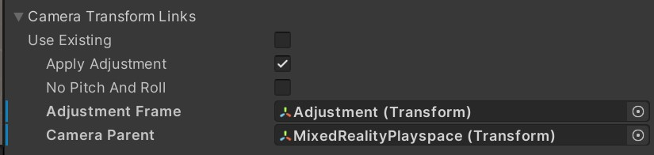

World Locking Tools Context and Manager settings
The World Locking Tools Context allows parametric customization of the World Locking Tools Manager in the Unity Inspector.
While the WorldLockingContext component presents a UI for the WorldLockingManager, it is important to understand that they are not the same thing, and in some situations it may be important to understand their relationship.
The Manager is a singleton
The WorldLockingManager is a singleton created on demand and persisting through the lifetime of the application. If no calls are made to the WorldLockingManager, it will never be instantiated. Once instantiated, it will remain live until the application is shut down. It is never destroyed and re-instantiated.
The WorldLockingManager is not a Unity object, it is a generic C# class. Its Update is driven by a proxy Unity component, an instance of the private WorldLockingManager.UpdateProxy class. It is otherwise independent from Unity's creation/update/destruction cycles.
The Context is a Unity component
The WorldLockingContext is a Unity component which is added to an object in the scene in the usual manner. It's fields appear in the Unity Inspector as would any other regular Unity component's fields.
While it is not an error to have multiple active WorldLockingContexts in a single scene, it is probably not desired, as the behavior would be undefined, dependent on the unknown order of object loads.
The settings on a context are applied when the WorldLockingContext is loaded. Specifically, the context pushes its settings onto the World Locking Tools Manager in its OnEnable call, and any time its scene becomes the active scene. The latter is applied as part of the Unity.SceneManager.activeSceneChanged callback, if and only if the new active scene is the scene the context belongs to.
All settings may be applied from script
At any point in the runtime, the application may apply custom settings to the WorldLockingManager via script. If any teardown and rebuilding of resources is required to effect a change in settings, that reconstruction will take place immediately on the settings change.
While there are some convenience members to get individual property values from the WorldLockingManager, for example AutoSave, setting of parameters always happens in aggregate. For example, code to toggle the AutoMerge and AutoRefreeze features might look like this:
/// Get a copy of the current settings
var settings = WorldLockingManager.GetInstance().Settings;
/// Modify the copy
settings.AutoMerge = !settings.AutoMerge;
settings.AutoRefreeze = !settings.AutoRefreeze;
/// Update the current settings to the values in the copy.
WorldLockingManager.GetInstance().Settings = settings;
Likewise for the diagnostics settings.
Note that changing multiple settings at once in this way only incurs the cost of a single rebuild (if any is required).
Settings precedence
Rules for the settings currently applied to the WorldLockingManager are very simple:
If no scene containing a context has been loaded, and no settings have been explicitly set from script, the WorldLockingManager has default settings.
A setting will retain its value until it is overridden by a WorldLockingContext loading with a scene, or an explicit change invoked from the application in script.
Caution should be used when mixing World Locking Tools Manager settings from contexts and settings from scripts. Since the context always applies its settings on load, a script manually applying setting during load, particularly from its OnEnable callback, will likely run into race conditions and indeterminate behavior.
Available settings
The available settings for controlling World Locking Tools behavior are broken into groups as follows.
Automation settings
Automation settings control the runtime behavior of the World Locking Tools Manager. The fields available for modification and their implications are documented within the ManagerSettings class. They are focused on enabling or disabling automated periodic actions by the manager. Any disabled automated action can be performed manually instead.
Linkage settings
Linkage settings are used to explicitly define the scene GameObjects whose transforms will be used to apply World Locking Tools' corrections.

The "Use Existing" field allows the linked objects to be set once in the scene with the camera rig (with "Use Existing" false), and not overridden by loading subsequent content scenes (with "Use Existing" true).
Conversely, setting "Use Existing" to false allows allows multiple scenes each with a different camera rig to bind to the appropriate places in the camera's hierarchy.
When creating and managing the camera hierarchy from script, the "Use Existing" field should be set to true on all Contexts,and the linkages updated explicitly from the camera managing scripts.
When the required transforms are not supplied, either left null or all Contexts have "Use Existing", then the system issues a warning and tries to infer good choices. It is recommended, but not required, to explicitly set the appropriate transforms, rather than having the system guess.
Anchor Management settings
The Anchor Management settings all the explicit selection of the anchor tracking system. This selection is currently done only at startup, and once selected cannot be changed.
Other settings here allow for control over the density of the underlying internal anchor graph. These may be changed at any time, although their effect may take some time to propagate through the internal graph.
When covering very large areas, one might want to lower the density of the internal anchor graph to sacrifice accuracy for performance. Increasing the MinNewAnchorDistance does just that. By increasing the minimum distance required before adding a new internal anchor, the spacing between the anchors increases, and so the density of anchors decreases.
It should be noted that in order to pass the edge creation test, the MaxAnchorEdgeLength must be larger than the MinNewAnchorDistance. In practice, a MaxAnchorEdgeLength 10-20% larger then the MinNewAnchorDistance works well.
The MaxLocalAnchors parameter, rather than modifying density, directly limits the number of internal anchors. Currently, when the anchor count is over the limit, anchors most distant from the camera are recycled to bring the number down. However, other algorithms are interesting and being investigated, so an application should not depend on this particular implementation.
More details are documenting within the AnchorSettings struct.
Diagnostics settings
The Diagnostics settings control the gather of diagnostics for analysis of behavior and debugging. They should normally be left with "Use Defaults" set, which, among other things, disables the collection of diagnostics. The diagnostics collection is a great performance drag, so should be avoided unless needed.
During development, when unexpected and undesirable behavior is being seen, the diagnostics data collected by disabling Use Defaults and enabling DiagnosticsSettings.Enabled will enable the collection of data which can be instrumental in understanding and fixing that behavior.
The fields available for modification are described within the DiagnosticsSettings class.
Default settings
Both the manager and diagnostics settings each contain a "Use Defaults" checkbox in the settings. The "Use Defaults" property is also available from script.
When the "Use Defaults" property is true, the current default settings are used. If default values for a property change in a new release, the "Use Defaults" property instructs the system to use the new property value.
Setting the "Use Defaults" property to true at any time will reset all values to their current default values. To lock the values at a snapshot of the default values at a given time, enable the "Use Defaults" property to reset all fields to the current defaults, then unset the checkbox to prevent them from being changed with an update.
It is suggested to leave the "Use Defaults" set to true, except during development for experimentation and debugging.